Todo lo que hace un operador en la app de escritorio
App versión 1.38 · 3 de noviembre de 2026 · Las imágenes son de una cuenta de prueba (clientes y
cámaras inventados; las caras, tapadas).
Qué hace un operador. Carga y mantiene los clientes y sus cámaras, deja cada cámara a punto (zonas, prueba en vivo
y con clips), revisa las alertas y las etiqueta, avisa al cliente cuando corresponde y entrena el modelo de cada
cliente. Trabaja en la app de escritorio («Analítica Crítica.exe»); la web queda para los clientes y los
administradores.
Qué puede y qué no puede hacer
El operador sí
Solo un administrador
Mirar cualquier cámara en vivo, con o sin la IA.
Crear y editar clientes (planes, horario, acceso web).
Agregar y editar cámaras y elegir qué mide cada una.
Marcar zonas, probar en vivo y con clips, aprobar.
Mandar cámaras a analizar o dejar de analizarlas.
Revisar y etiquetar las alertas de todos los clientes y avisar al cliente.
Ver y exportar métricas (PDF o Excel), entrenar el modelo, cambiar nombres, bajar grabaciones.
Pestaña Máquinas: las máquinas de análisis en la nube (prender, apagar, reparto).
Pestaña Administración: usuarios y claves.
Borrar clientes, cámaras, usuarios o PCs.
Si necesitás algo de esta columna, pedíselo a un administrador.
Contenido
Instalar, entrar y actualizar
La ventana: tres pestañas
En vivo: mirar cámaras
Clientes: la lista y el cliente
Cliente nuevo o editar cliente
Agregar o editar cámaras
Poner a punto una cámara (4 pasos)
Paso 1 · Marcar zonas
Paso 2 · En vivo con la IA
Paso 3 · Clips
Paso 4 · Aprobar y analizar
Alertas: revisar y etiquetar
Avisar al cliente
Métricas y reportes
Entrenar el modelo
Nombres e imágenes · Bajar grabación
Atajos
Problemas comunes y límites
1Instalar, entrar y actualizar
Instalar: el administrador te pasa el archivo AnaliticaCritica-windows.zip (o lo bajás desde la web con
«Descargar la app»). Descomprimilo en una carpeta tuya (por ejemplo, Documentos) y abrí Analítica Crítica.exe. No
hace falta instalar nada más.
Entrar: con el usuario y la clave que te dio el administrador. La app recuerda la sesión: la próxima vez abre
directo.
Una sola app por PC. Si ya está abierta, la app te lo dice: usá esa ventana (fijate en la barra de tareas).
Tu usuario, en una PC a la vez. Si entrás con el mismo usuario en otra PC, la primera te pide entrar de nuevo.
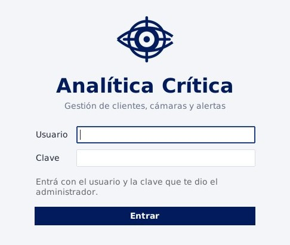
Pantalla para entrar.
Arriba de todo (en todas las pestañas):
● Conectado en verde: la app habla con el servidor. En rojo, «sin conexión»: revisá internet (se reintenta sola).
★ Actualizar a X aparece solo cuando hay una versión nueva. Un clic: se baja, se reemplaza y se
vuelve a abrir sola, con tu sesión.
Tu usuario ▾ (a la derecha): «Buscar actualización», la versión instalada y «Cerrar sesión».
Registro ▴ (abajo a la derecha): lo que va pasando. Si algo falla, el detalle está ahí.
2La ventana: tres pestañas
En vivo
Para mirar cámaras (con la IA de tu PC si querés). Mirar no analiza ni guarda nada.
Clientes
Donde se trabaja: clientes, sus cámaras, la puesta a punto, analizar o no, métricas,
entrenamiento.
Alertas
Las alertas de posible hurto de todos los clientes, para revisarlas, etiquetarlas y,
si corresponde, avisar al cliente.
Las pestañas se actualizan solas al entrar y cada 30 segundos: no hay botones «Actualizar».
3En vivo: mirar cámaras
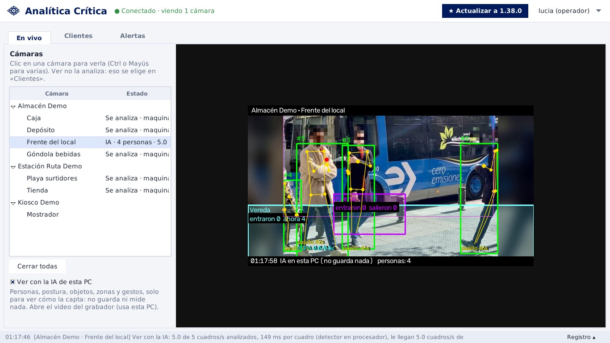
«En vivo» con «Ver con la IA de esta PC»: personas con número,
esqueleto, zonas y cuántas personas hay en cada una.
A la izquierda están todas las cámaras, agrupadas por cliente. Clic en una para verla; con Ctrl o
Mayús elegís varias (se ven en mosaico). Cerrar todas deja de mirarlas.
Ver con la IA de esta PC (tildado): tu PC le aplica a la imagen lo mismo que el análisis — personas con su número
(#3), postura, objetos, zonas, segundos en cada zona y cuántas entran — solo para ver cómo la capta. No
guarda alertas ni métricas ni le avisa a nadie.
Sin tildar: si una máquina ya analiza la cámara, ves la imagen que sube la máquina (1 por segundo, con recuadros); si no,
el video tal cual.
Estado (columna de la derecha): «Viendo · N fps», «IA · 4 personas · 5 de 5 cuadros/s», «Se analiza · máquina»,
«No disponible»…
Ojo con Hik-Connect. Mirar con la IA abre otra transmisión del grabador. Los grabadores por Hik-Connect dan pocas a la
vez: si una cámara no abre, cerrá las que no estés mirando. Y si la PC no da abasto, el estado lo dice («la PC no da
abasto»): la imagen sigue, pero se analizan menos cuadros.
4Clientes: la lista y el cliente
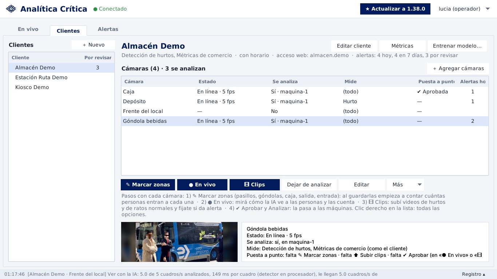
«Clientes»: a la izquierda los clientes; a la derecha el
cliente elegido, sus cámaras, la barra de la cámara y su imagen.
Lista de clientes (izquierda): «Por revisar» = alertas sin etiquetar. ＋ Nuevo crea uno; doble clic
lo edita.
El cliente (arriba a la derecha): nombre, planes, horario, acceso web y alertas (hoy · 7 días · por revisar), y los
botones Editar cliente · Métricas · Entrenar modelo….
Sus cámaras, con columnas: Estado (en línea, sin conexión, local cerrado…), Se analiza (sí y en
qué máquina, o no), Mide (lo que mide de lo que contrató el cliente; «(todo)» = como el cliente), Puesta a
punto (en ajuste / ✔ aprobada) y Alertas hoy. ＋ Agregar cámaras suma cámaras; doble clic edita
una.
La barra de la cámara elegida: ✎ Marcar zonas● En vivo🎞 Clips
(los tres de la puesta a punto) · Analizar / Dejar de analizar · Editar ·
Más ▾ (Qué mide…, Probar conexión, Bajar grabación…, Nombres e imágenes de todas…, Elegir todas).
Clic derecho en una cámara: todas las opciones juntas (también «⬆ Subir un clip nuevo…»).
Ctrl+A elige todas; con Ctrl/Mayús elegís varias para «Analizar», «Qué
mide…» o «Bajar grabación…».
Abajo: la última imagen de la cámara y sus datos, con lo que le falta para estar a punto («falta ✎ Marcar zonas ·
falta ⬆ Subir clips · falta ✔ Aprobar»).
5Cliente nuevo o editar cliente
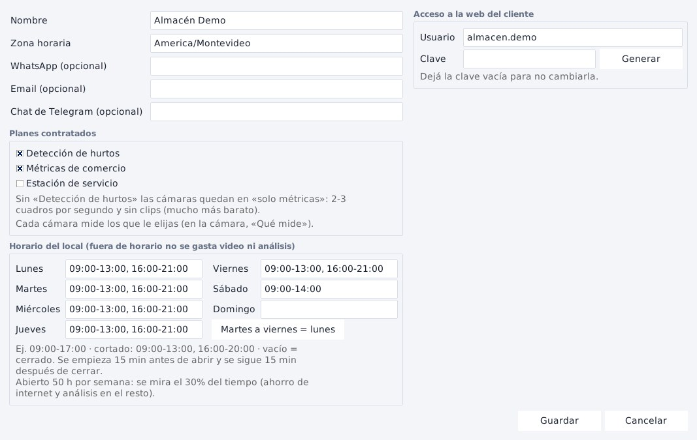
El formulario del cliente.
Nombre y zona horaria
La zona horaria es la del local (Uruguay: America/Montevideo). De ella
salen las horas de las alertas y las métricas.
WhatsApp, email, Telegram
Opcionales: por dónde le llega el aviso al cliente cuando decidís avisarle (el
portal web va siempre).
Planes contratados
Detección de hurtos (alertas), Métricas de comercio (gente que entra,
a dónde va, cuánto se queda), Estación de servicio (vehículos y surtidores). Al menos uno. Sin «Detección de hurtos»
las cámaras quedan en «solo métricas»: más baratas, sin alertas ni clips.
Horario del local
Un horario por día: 09:00-17:00, cortado 09:00-13:00,
16:00-20:00, vacío = cerrado. Se mira desde 15 min antes de abrir hasta 15 min después de cerrar; con el local
cerrado no se gasta video ni análisis. Martes a viernes = lunes copia el lunes. Sin horario = 24 h.
Acceso a la web del cliente
Usuario y clave con los que el dueño del local entra a la web
(analitica-critica.vercel.app) a ver su resumen, alertas y métricas. Generar inventa una clave; al guardar,
la app te muestra el texto para pasarle con Copiar. Clave vacía = no se cambia.
6Agregar o editar cámaras
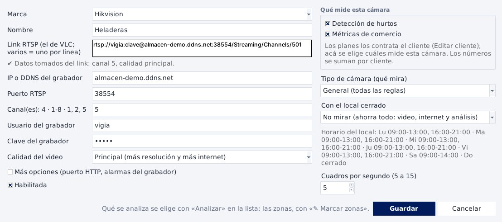
Cámara nueva: al pegar el link RTSP se completan solos la
dirección, el puerto, el usuario, la clave, el canal y la calidad.
Marca:Hikvision o Dahua (por IP y puertos del router), o Hikvision por Hik-Connect (por la nube,
sin abrir puertos).
Hikvision o Dahua: pegá el link RTSP que te pasa el técnico (el mismo que abre en VLC). Varios links = una
cámara por línea. Sin link, escribí los datos: IP o DDNS, puerto RTSP, canal(es) (4, 1-8 o
1, 2, 5: una cámara por canal), usuario y clave del grabador, calidad (secundaria = menos internet).
Hik-Connect:Elegir de Hik-Connect… lista las cámaras que ve la cuenta del cliente (se pueden
elegir varias). Si el cliente todavía no tiene su clave cargada: Clave de Hik-Connect… (AppKey y
SecretKey; nunca sale del servidor). Si dice «cifrado de video», hay que apagar el cifrado en el grabador.
Qué mide esta cámara (derecha): de los planes del cliente, cuáles mide. Ver punto 6.1.
Tipo de cámara: decide qué alertas se buscan. General = todas · Góndola / pasillo = salida sin pago, restringida,
fuera de horario y gestos · Caja = restringida y fuera de horario · Entrada / puerta = salida sin pago y fuera de horario ·
Depósito = toda la imagen es zona restringida · Calle / exterior y Surtidor = vehículos · Solo métricas = sin
alertas.
Con el local cerrado: no mirar (lo normal, ahorra todo), escuchar solo las alarmas del grabador, o seguir analizando
24 h.
Cuadros por segundo: 5 (mínimo para hurto) a 15. Más cuadros = más costo; 5 alcanza.
Más opciones: puerto HTTP y alarmas del grabador (casi nunca hace falta).
Una cámara nueva no se analiza hasta que la mandes (paso 4). Para saber si llega al grabador: Más ▾ →
Probar conexión (explica por qué no abre: nombre DDNS, puerto, usuario o clave, canal, calidad…).
6.1 Qué mide cada cámara
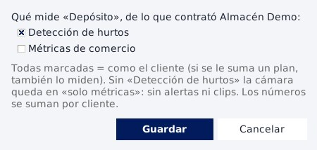
«Más ▾ → Qué mide…», para una o varias cámaras.
El cliente contrata planes; cada cámara mide los que le elijas, y los números se suman por cliente. Ejemplo
en una estación: la cámara de la playa mide solo «Estación» (vehículos), la de la tienda «Hurto» y «Comercio».
Todas tildadas = como el cliente (si se le suma un plan, también lo mide). Sin «Detección de hurtos» la cámara no da
alertas. Si el cliente deja un plan que tenía elegido una cámara, la lista lo dice («nada: elegilo en Editar»).
7Poner a punto una cámara (4 pasos)
Antes de que una cámara se analice de verdad, se prepara en tu PC. Son cuatro pasos, en este orden (también están escritos
debajo de la barra de la cámara):
1 · ✎ Marcar zonasDibujar pasillos, góndolas, caja, salida y entrada. Al guardar empieza a contar.
2 · ● En vivoMirar cómo la IA ve a las personas y las cuenta, y qué alertas daría.
3 · 🎞 ClipsSubir videos de hurtos y de ratos normales y ver si da alerta y por qué.
4 · ✔ Aprobar y analizarLa cámara pasa a las máquinas de análisis.
«● En vivo» y «🎞 Clips» abren la misma ventana de la cámara (una por cámara), con los dos modos
arriba: se cambia de uno a otro con un clic y ✎ Marcar zonas está siempre a la vista.
8Paso 1 · Marcar zonas
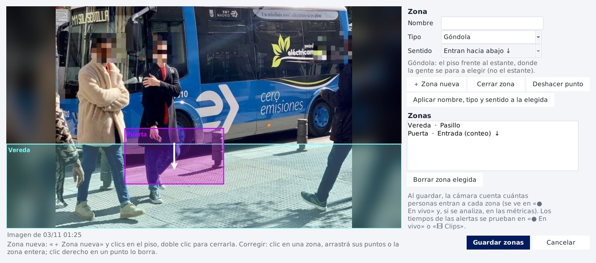
El editor de zonas: «Vereda» (pasillo) y «Puerta» (entrada, la
flecha dice hacia dónde caminan los que entran).
＋ Zona nueva y clics en el piso para marcar los puntos; doble clic (o Cerrar zona)
para cerrarla. Deshacer punto borra el último.
Poné el nombre (ej. «Góndola bebidas»), el tipo y, si es una entrada, el sentido, y
Aplicar nombre, tipo y sentido a la elegida.
Para corregir: clic en una zona y arrastrá sus puntos o la zona entera; clic derecho en un punto lo borra;
Borrar zona elegida.
Guardar zonas. Desde ahí la cámara cuenta cuántas personas entran a cada zona (en «● En vivo» y,
si se analiza, en las métricas). Si la cámara ya se analiza, las zonas nuevas rigen enseguida.
Tipo
Qué se marca
Para qué sirve
Góndola
El piso frente al estante, donde la gente se
para a elegir (no el estante).
«Tomó algo» (salida sin pago) y gestos.
Pasillo
Por donde camina la gente.
Solo métricas: a
dónde va la gente. No da alertas.
Caja
El piso donde el cliente paga, de su lado del
mostrador.
Saber si pasó por la caja.
Salida
El piso junto a la puerta, del lado de
adentro.
Salida sin pago: tomó algo y salió sin pasar por la caja.
Restringida
Donde un cliente no debería entrar.
Alerta
apenas alguien entra.
Entrada (conteo)
La puerta, con el sentido: hacia
dónde caminan en la imagen los que entran.
Cuántos entraron y cuántos salieron (la cifra de gente del
cliente).
Personal
Detrás del mostrador o el depósito.
Quien la
pisa se toma como empleado y no se cuenta como cliente.
Surtidor ·
Tienda
Donde para el vehículo a cargar · el piso de la tienda de la estación.
Métricas de estación.
Consejos. Marcá siempre el piso: la IA mira dónde están los pies. Un punto a menos del 3 % del borde se pega solo al
borde (así no queda afuera alguien con los pies cortados). Si la cámara todavía no tiene imagen, abrila en «● En vivo» o subí
un clip y volvé a «✎ Marcar zonas» (se puede dibujar sobre el negro igual).
9Paso 2 · En vivo con la IA
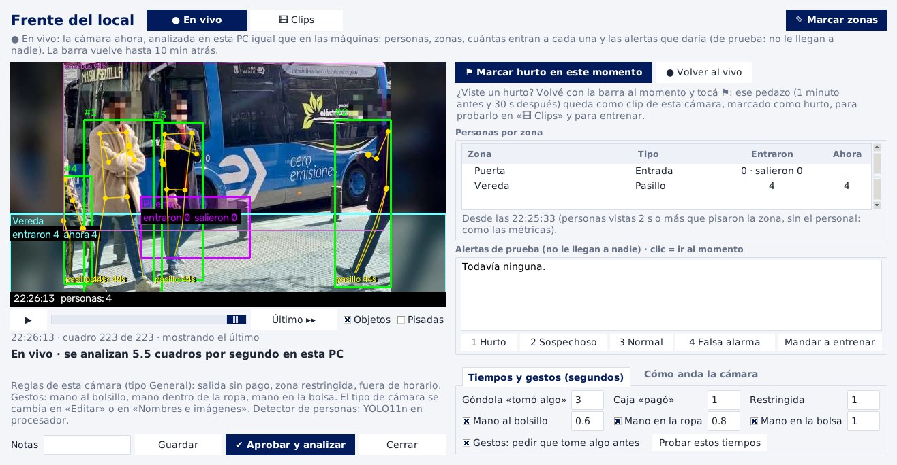
La ventana de la cámara en «● En vivo»: arriba los dos modos y
«✎ Marcar zonas»; a la derecha, personas por zona, alertas de prueba y tiempos.
La cámara se analiza en tu PC, igual que en las máquinas: recuadro y número de cada persona, esqueleto, segundos en
cada zona («pasillo 44s»), «TOMÓ ALGO», gestos («BOLSILLO 0.4/0.6s»). Casillas Objetos (otras cosas que ve YOLO:
mochilas, botellas…) y Pisadas (dónde camina y dónde se para la gente).
Personas por zona: cuántas entraron a cada zona y cuántas hay ahora (la entrada, cuántos entraron y salieron).
Cuenta igual que las métricas: personas vistas 2 s o más, sin el personal.
La barra vuelve hasta 10 minutos atrás; ▶ reproduce; Último ▸▸ vuelve al
momento actual.
Alertas de prueba: las que daría la cámara con estas zonas y tiempos. No le llegan a nadie. Clic en una =
ir a ese momento.
Entrenar desde el vivo
¿Viste un hurto? Volvé con la barra a ese momento y tocá ⚑ Marcar hurto en este momento: el pedazo de 1
minuto antes a 30 segundos después queda guardado como clip de esa cámara, marcado como hurto (en
Descargas\VIGIA), listo para probarlo en «🎞 Clips». ● Volver al vivo retoma el tiempo real.
Etiquetá las alertas de prueba con 1 Hurto2 Sospechoso3 Normal4 Falsa alarma y Mandar a entrenar: así el modelo del cliente aprende a separar hurtos de
falsas alarmas. Las alertas de prueba del momento que marcaste con ⚑ ya quedan como «hurto?».
Tiempos y gestos · Cómo anda la cámara
Tiempos y gestos (segundos): cuánto tiene que estar alguien frente a la góndola para «tomó algo», en la caja para
«pagó», en la zona restringida; qué gestos se buscan (mano al bolsillo, en la ropa, en la bolsa) y cuántos segundos.
Probar estos tiempos recalcula al instante todo lo ya analizado (no hace falta esperar otro hurto).
Cómo anda la cámara: tamaño de las personas, confianza de la IA, cuadros por segundo, cortes y avisos («personas
muy chicas», «falta zona Salida», «imagen de noche»…).
Abajo: Notas, Guardar (guarda tiempos y gestos; la cámara queda «en ajuste») y ✔ Aprobar
y analizar (paso 4).
10Paso 3 · Clips
Los clips son videos de esa cámara: un hurto, o un rato normal (gente comprando sin problema). Sirven para probar si la
cámara da la alerta cuando tiene que darla y no la da cuando no, y para entrenar el modelo.
🎞 Clips en la barra (o ⬆ Subir clips… dentro de la ventana). Elegí uno o varios videos
(MP4 o AVI). Se consiguen con Más ▾ → Bajar grabación… (punto 16), con ⚑ en el vivo o exportándolos del
grabador. Un .dav o .264 que no abra: exportalo como MP4.
¿Qué pasó en el clip? Un hurto en el momentomm:ss (si no lo sabés, dejalo vacío) · Nada raro ·
No sé. → Analizar.
La IA lo analiza con la configuración guardada de la cámara (zonas, tiempos, tipo, gestos y el modelo del cliente) y
al terminar te dice si acertó y por qué. Por ejemplo:
Frente del local - tarde.mp4 (normal (sin hurto)): ✔ sin alertas, bien
· Persona #1: 24 s a la vista; 24 s seguidos en «Vereda». Gestos: postura bien vista
en el 100 % de los cuadros; no se la vio tomar algo…
o «✘ no vio el hurto de 1:00» con la explicación (no pisó la zona, le faltó tiempo, no hay zona Salida…).
En el mismo mensaje: «¿Mandar al entrenamiento?». Con «Sí», las alertas de ese clip se etiquetan solas según lo que
dijiste (un hurto sin momento no se etiqueta: el mensaje lo explica).
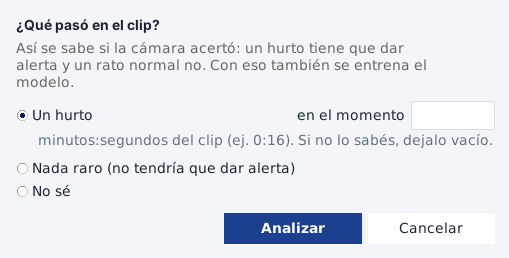
Al subir un clip: qué pasó.
En la ventana, modo «🎞 Clips»:
La lista de clips de la cámara con lo que pasó y el resultado de la IA.
▶ Analizar todos de nuevo: después de cambiar zonas o tiempos, para ver si mejoró.
Clip elegido ▾: marcarlo como hurto en el momento que se ve, normal o sin clasificar; quitarlo de la lista;
abrir la carpeta de clips.
Misma tabla de personas por zona, alertas de prueba (1-4 y «Mandar a entrenar») y tiempos que en el vivo.
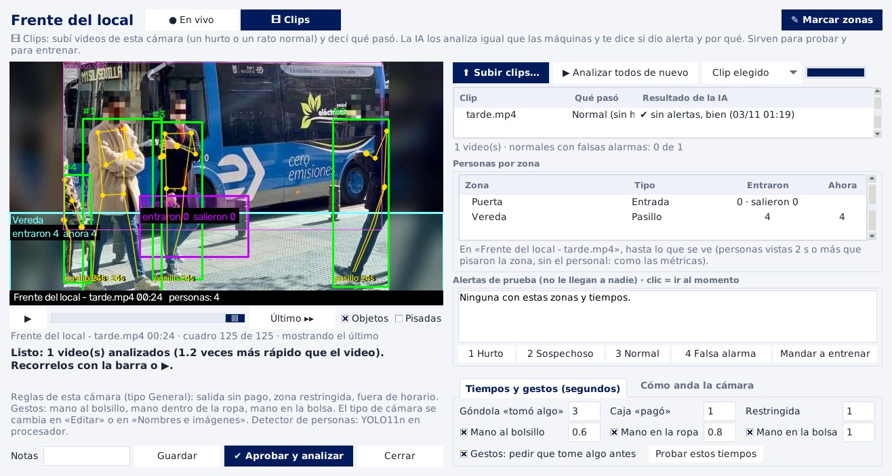
Modo «🎞 Clips» con un clip normal analizado: «✔ sin alertas,
bien» y las 4 personas contadas en la Vereda.
11Paso 4 · Aprobar y analizar
✔ Aprobar y analizar (abajo en la ventana de la cámara): guarda quién la aprobó y cuándo, con tus notas, y
manda la cámara a las máquinas de análisis. El mensaje dice en qué máquina quedó (o que no hay ninguna en línea:
avisale a un administrador).
Desde ahí la cámara da alertas reales (le llegan a la pestaña Alertas) y guarda métricas.
En la barra, Analizar / Dejar de analizar hace lo mismo sin aprobar (sirve para varias a la
vez). Si alguna no está aprobada, la app pregunta antes; para dejar de analizar, también.
Cambiar una cámara que ya se analiza (zonas, tiempos, gestos): la ventana avisa y pide confirmación, porque rige
enseguida en la máquina.
Antes de aprobar, fijate: que se vean bien las personas en el vivo (no muy chicas, de día), que
las zonas estén en el piso, que haya Salida y Caja si se busca «salida sin pago», y que los clips normales no den falsas
alarmas. Los cuadros por segundo en 5 (más es más caro).
12Alertas: revisar y etiquetar
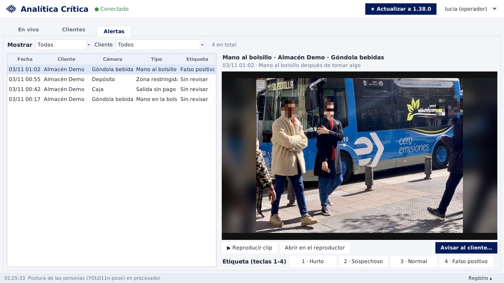
La pestaña Alertas: la lista, la foto, el clip, las etiquetas
y «Avisar al cliente…».
Mostrar: Sin revisar (lo normal) · Todas · Hurto · Sospechoso · Normal · Falso positivo. Cliente: todos o
uno.
Clic en una alerta: tipo, cliente, cámara, hora, descripción y la foto. ▶ Reproducir clip lo pasa en la app;
Abrir en el reproductor lo abre en el de Windows.
Etiquetala con los botones o las teclas 1–4:
1 · Hurto
Se ve el hurto.
2 · Sospechoso
Raro, pero no se llega a ver que se lleve algo.
3 · Normal
Una persona comprando o trabajando normalmente.
4 · Falso positivo
No hay nada: la IA se equivocó (una sombra, un reflejo, un empleado).
Cada etiqueta entrena el modelo de ese cliente (punto 15). Etiquetá todas, también las falsas alarmas: son las que
más le enseñan.
Tipos de alerta: Salida sin pago · Zona restringida · Fuera de horario · Mano al bolsillo · Mano dentro de la
ropa · Mano en la bolsa · Alarma del grabador.
13Avisar al cliente
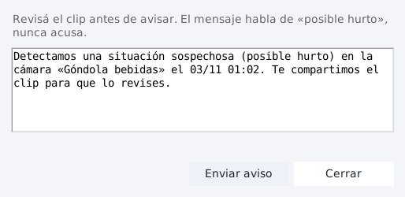
«Avisar al cliente…»: el mensaje se puede cambiar.
Nunca es automático. Lo decide una persona después de ver el clip.
El mensaje habla de «posible hurto», nunca acusa. Podés cambiarlo.
Enviar aviso: le llega por el portal web (siempre) y por WhatsApp, email o Telegram si el cliente
los tiene cargados. La app copia al portapapeles un link privado al clip que vence en 14 días.
Regla de oro: si no se ve claro en el clip, no se avisa (se etiqueta «Sospechoso»). Un aviso por una
falsa alarma le hace perder la confianza al cliente y puede acusar a un inocente.
14Métricas y reportes
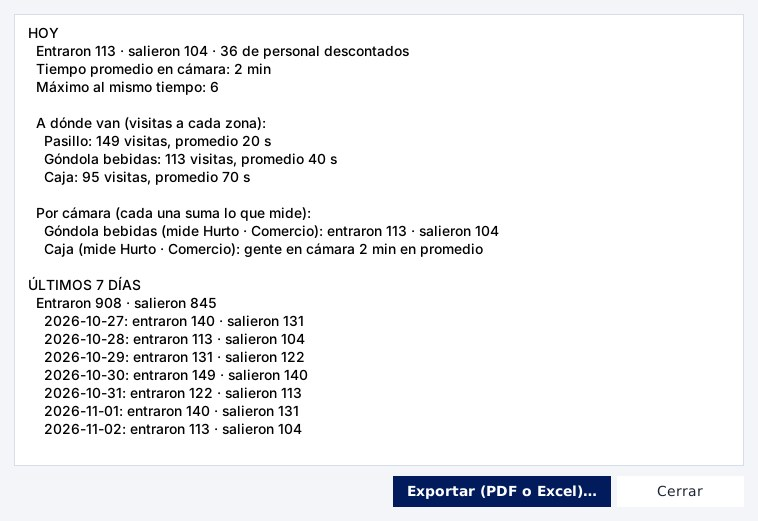
«Métricas» del cliente.
Entraron · salieron: lo cuenta la zona Entrada con sentido. Sin esa zona no hay cifra de gente
(«sin conteo de la puerta»). Se descuenta el personal.
Tiempo promedio en cámara, máximo de personas al mismo tiempo y a dónde van (visitas y tiempo en cada zona).
Por cámara: cada una suma solo lo que mide.
Con plan estación: vehículos, espera hasta el pistero, vehículos sin atender, visitas a la tienda.
Exportar (PDF o Excel)…: el reporte en PDF de un cliente (el mismo que baja el cliente en la web), o
el Excel por cámara y día u hora, de uno o de todos.
15Entrenar el modelo
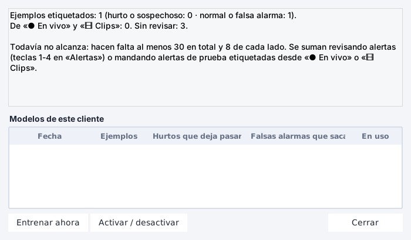
«Entrenar modelo…» de un cliente.
Cada cliente tiene su modelo, que aprende de las alertas etiquetadas (las reales de la pestaña Alertas y las de prueba
mandadas desde «● En vivo» y «🎞 Clips») a descartar falsas alarmas.
Hacen falta al menos 30 ejemplos, 8 de cada lado (hurto o sospechoso / normal o falsa alarma).
Entrenar ahora arma un modelo nuevo; la tabla dice cuántos hurtos deja pasar y cuántas falsas alarmas
saca. Activar / desactivar elige cuál se usa.
El modelo solo filtra alertas que ya salieron: no le enseña a ver un hurto que no dio
alerta. Para eso se ajustan zonas, tiempos y gestos con clips (pasos 1-3).
16Nombres e imágenes · Bajar grabación
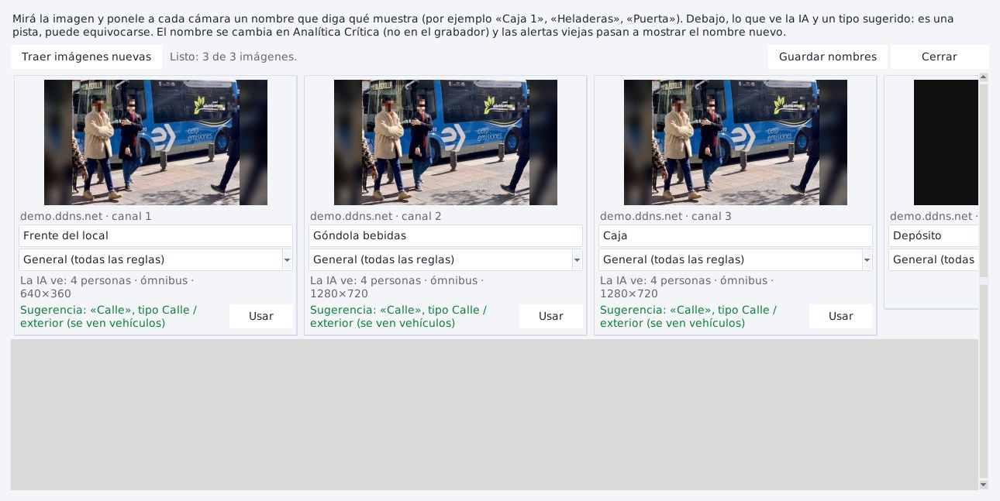
«Más ▾ → Nombres e imágenes de todas…»: cada cámara con su
imagen, nombre y tipo.
Nombres e imágenes: ponele a cada cámara un nombre que diga qué muestra («Caja 1», «Heladeras», «Puerta») y su
tipo. Debajo, lo que ve la IA y una sugerencia (botón «Usar»): es una pista, puede equivocarse. Traer
imágenes nuevas las actualiza; Guardar nombres. Renombrar no corta el video ni cambia nada en el
grabador.
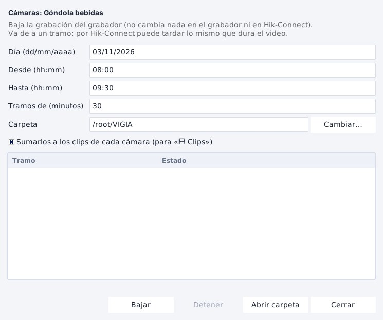
«Bajar grabación…».
Bajar grabación: elegí una o varias cámaras → Más ▾ → Bajar grabación….
Día, desde, hasta y tramos (de 30 min: un archivo por tramo).
Carpeta: Descargas\VIGIA. El archivo se llama «Cliente - Cámara - fecha hora.mp4».
Con «Sumarlos a los clips de cada cámara» quedan listos para «🎞 Clips».
No cambia nada en el grabador ni en Hik-Connect. Por Hik-Connect puede tardar lo mismo que dura el video.
17Atajos
Clic derecho en una cámara
Todas sus opciones.
Doble clic
Edita el cliente o la cámara.
Ctrl/Mayús + clic · Ctrl+A
Elegir varias cámaras · todas.
1234
Etiquetar la alerta elegida (Alertas).
Una ventana por cámara
Volver a tocar «● En vivo» o «🎞 Clips» la trae al frente en ese modo.
Registro ▴
Qué pasó y por qué falló algo.
18Problemas comunes y límites
Lo que ves
Qué hacer
«Sin conexión» / «No disponible» en una cámara
Más ▾ → Probar conexión: dice si es el nombre
DDNS, el puerto del router, el usuario o la clave, el canal o la calidad. Si el local está cerrado dice «Local cerrado ·
vuelve HH:MM» (es normal).
Hik-Connect: «cifrado de video» (EVZ60019)
El grabador tiene el cifrado prendido: el cliente o el técnico lo
apaga (ver el tutorial de Hikvision).
Hik-Connect: una cámara abre y otra no
Límite de transmisiones del grabador: cerrá las que no mires (también
«Ver con la IA»).
«La PC no da abasto»
Mirá menos cámaras con la IA a la vez. El análisis real lo hacen las máquinas, no tu
PC.
La IA no ve a nadie de noche
Con infrarrojo (imagen en blanco y negro) la IA ve mucho peor. Probá con clips de
día.
«La sesión venció» / «Tu usuario entró en otra PC»
Entrá de nuevo. Usá tu usuario en una sola PC.
Falta «Máquinas», «Administración» o «Eliminar»
Es lo esperado: son de administrador.
Límites, para decírselos al cliente con honestidad:
Cada alerta es un indicio para revisar, no una prueba. La precisión todavía no se midió con muchos hurtos reales.
Los gestos (mano al bolsillo, en la ropa, en la bolsa) fallan con cámaras desde arriba u ojo de pez, de noche, con
personas chicas o de espaldas; la bolsa propia o el celular pueden dar falsas alarmas.
No reconoce caras. Una persona que se pierde detrás de algo y vuelve puede contarse dos veces.
Las cámaras en modo alarmas (solo escuchan al grabador) no miden métricas.
Analítica Crítica · Guía para operadores · App 1.38 · 3 de noviembre de 2026. Dudas o algo que no anda como dice
acá: avisale a un administrador con una captura y la hora.